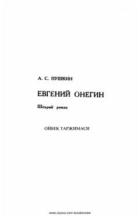

EOAleksandr Pushkinning Oybek tarjimasidagi mashhur she'riy romani.
Aleksandr Pushkinning ushbu mashhur she'riy romani rus adabiyotining durdonalaridan biri hisoblanadi. Asar Oybek tarjimasida o'zbek tiliga o'girilgan bo'lib, unda XIX asr boshidagi rus jamiyati hayoti, yoshlar taqdiri va muhabbat mavzulari yoritilgan.